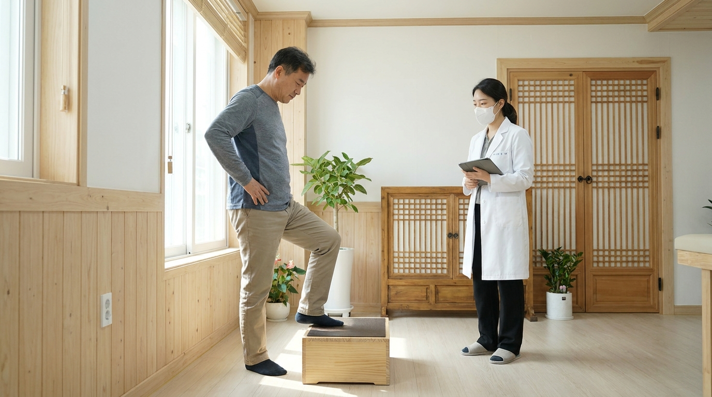
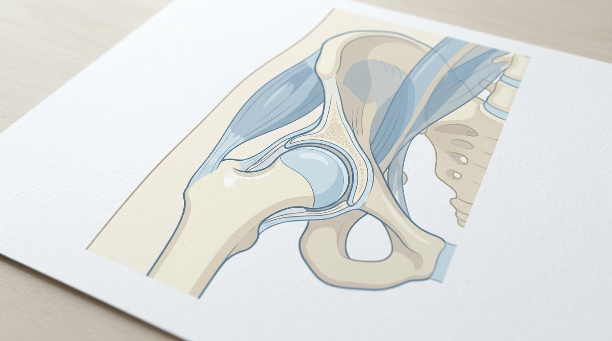

Which Exercise Should You Discuss First When Walking and Stairs Are Difficult Due to Hip Osteoarthritis?
Short answer: Compared with no treatment, usual care, or limited education, there is evidence that exercise therapy improves pain and function slightly on average, but this effect size may not be large enough for an individual to notice[1]. Deciding which exercise, at what intensity, and for how long is an actually important decision that should be made by consulting with your medical provider, taking into account your current pain level, the pattern of symptoms during walking and stair use, and your overall vitality status.
Hip Osteoarthritis: What to Check When Walking and Stairs Become Difficult
Hip osteoarthritis often causes pronounced pain and movement limitation when walking distances increase or when going up and down stairs. What patients actually want to know is not the general statement of "does exercise work," but the specific selection criteria of "what exercise should I start with, and to what degree, given my condition." This article explains what exercise therapy studies actually evaluated, and distinguishes how to connect those results to an individual consultation.

Generated image for clinical explanation
Bodyall Korean Medicine Clinic's Examination: Directly Comparing Walking and Stair Movements
Bodyall Korean Medicine Clinic in Ingye-dong, Suwon, observes overall body shape and left-right symmetry for cases presenting with hip pain, and checks the movement of spinal and pelvic segments through palpation. Next, it compares active and passive range of motion, and directly checks the actual gait and the movement the patient reports as uncomfortable. The purpose of this examination is not to substitute for the exercise prescription itself, but to identify which movements reproduce pain, serving as foundational data for subsequent consultation on exercise type and intensity and for the treatment plan.
If the examination determines that the condition is correctable and in need of correction, SART (a biomechanical space decompression Chuna process, described name, not an official English/Chinese term) may be considered. SART involves supporting the pelvis, includes joint mobilization of the sacroiliac joint, and applies foot contact to spinal segments above the pelvis. However, since these two papers did not evaluate the effects of Chuna or SART, this process is described separately as a care procedure confirmed by Bodyall, and is not evidence directly linked to the results of the exercise studies below.
2026 Cochrane Review: The Average Effect of Exercise Is Small but Uncertain
The Cochrane systematic review published by Hall et al. (2026) synthesized multiple studies comparing land-based therapeutic exercise with usual care, limited education, no treatment, or sham treatment in adults with hip osteoarthritis[1]. Compared with no treatment, usual care, or limited education, exercise probably improves pain and joint function slightly. Compared with sham treatment, however, exercise may have little to no effect on pain and may improve joint function slightly[1]. In other words, this does not mean exercise has no effect at all, but a limitation is also presented that it is uncertain whether the average degree of improvement is sufficient for a patient to feel it is clinically meaningful[1]. This review did not verify a specific Chuna technique or an individual patient's exercise selection method, so it is difficult to apply it as-is as a specific guideline for "which exercise and how much should be done"[1].
2014 RCT: Pain and Function Improvement in Participants with Relatively Good Vitality and Health
The randomized controlled trial by Krauss et al. (2014) applied 12 weeks of exercise therapy to patients with hip osteoarthritis who had a normal vitality level[2]. The abstract of this study states that "12 weeks of exercise therapy reduced pain and improved physical function in hip osteoarthritis patients with normal vitality"[2]. However, the study participants had relatively good vitality and general health, so whether the findings also apply to patients in poorer health remains uncertain. This was not an analysis comparing effects between vitality subgroups, nor a study of the effectiveness of care at Bodyall Korean Medicine Clinic[2]. When overall fatigue or reduced vitality is also present, it cannot be assumed that the same exercise intensity will lead to the same result.

Conceptual illustration of the femoral head and acetabulum in the hip joint
What Changes When You Look at Both Studies Together
The 2026 Cochrane review shows small average improvements with exercise compared with no treatment, usual care, or limited education, while the 2014 RCT found pain and function improvements in participants with relatively good vitality and health. These two studies alone do not establish differences in effects by vitality level or an appropriate exercise intensity for each individual. Therefore, when determining exercise type and intensity, a consultation is needed to check the current pain pattern, symptoms during walking and stair use, vitality status, and presence of comorbid conditions together with medical staff.
Next Steps at Bodyall: Movement Reassessment and Consultation
After applying treatment, Bodyall Korean Medicine Clinic compares the same walking and stair movement that was initially uncomfortable again, and reflects this in subsequent care and in movement education for daily life. This is not a procedure that substitutes for the results of exercise therapy research, but a process of tracking how the movement limitations confirmed during examination have changed after treatment. It is advisable that the exercise type and intensity themselves be determined through individual consultation with medical staff based on the degree of pain, symptoms during walking and stair use, and vitality status.
※ Note: Along with hip pain, sudden weight loss, fever, severe pain that persists even at night, or complete inability to bear weight after trauma are signals that require evaluation before an exercise consultation.
Frequently Asked Questions
Q. Does exercise alone improve hip osteoarthritis?
A. According to the Cochrane review, exercise compared with no treatment, usual care, or limited education is reported to improve pain and function slightly on average, but its clinical significance is uncertain[1], so whether exercise alone is sufficient may vary by individual.
Q. Does 12 weeks of exercise therapy have the same effect for everyone?
A. The 2014 RCT reported pain and function improvement in participants with relatively good vitality and health[2], and it is difficult to say the same applies equally to cases also involving reduced vitality.
Q. Is Chuna or SART more effective than exercise?
A. These two papers did not evaluate the effects of Chuna or SART, so there is no evidence directly comparing them with exercise. Bodyall Korean Medicine Clinic's own examination and SART process can be checked separately at the SART care process.
If You Need a Consultation
If walking and stairs are difficult due to hip osteoarthritis, you can receive a consultation that checks together which exercise to start with and at what intensity, as well as Bodyall Korean Medicine Clinic's examination and whether SART applies. Check the schedule at Care and Appointment Information.
Author: Bodyall Korean Medicine Clinic · AI-assisted editing and translation
Review and approval: AI-assisted review with publication approval delegated by Chief Director Donghae Lee. The translations have not received separate personal physician review.
Korean original · Approval date: 2026-10-14T10:14:00+09:00
Published: 2026-10-14T10:26:16+09:00
Modified: 2026-10-14T10:26:16+09:00
- Hall et al. (2026). Exercise for osteoarthritis of the hip. Cochrane Database of Systematic Reviews. DOI: 10.1002/14651858.CD007912.pub3 · PMID: 42486497
- Krauss et al. (2014). Exercise therapy in hip osteoarthritis--a randomized controlled trial. Deutsches Ärzteblatt International. DOI: 10.3238/arztebl.2014.0592 · PMID: 25249361